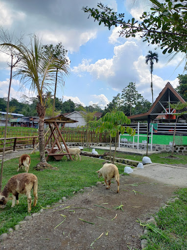

Selamat datang di Wisata Alam Situ Tirta Marta Desa Karangcegak, Kecamatan Kutasari, Kabupaten Purbalingga.
Salah satu wisata telaga yang ramai dikunjungi adalah Situ Tirta Marta yang memiliki air sangat bening dan bisa dijadikan spot foto underwater di Purbalingga. Tirta marta sendiri berarti air perempuan, ada juga yang mengartikan air kehidupan. Mungkin karena jaman dahulu sering digunakan untuk mandi para wanita. Telaga alami di bawah rindangnya pepohonan yang asri ini memiliki 7 sumber mata air atau dalam bahasa Jawa artinya "tuk pitu". Tak heran apabila air kolamnya tidak pernah kering meski di musim kemarau sekalipun. Seperti wisata unggul Ponggok Klaten, Situ Tirta Marta juga bisa digunakan pengunjung untuk mandi dan berendam sepuasnya sambil merasakan kesegaran air pegunungan. Daya tarik telaga Situ Tirta Marta adalah spot foto underwater, tubing, dan juga paket outbound untuk anak-anak. Situ Tirta Marta terletak di Desa Karangcegak Kecamatan Kutasari Kabupaten Purbalingga Jawa Tengah. Situ Tirta Marta merupakan telaga yang memiliki air sangat jernih dan berasal dari sumber mata air alami. Memiliki kolam yang kedalamannya ± 1,5 meter, sehingga bisa digunakan orang dewasa maupun anak-anak. Namun untuk anak-anak butuh pengawasan khusus karena tinggi badan anak biasanya belum sampai 1,5 meter. Sebenarnya Di Situ Tirta Marta terdapat tiga kolam, namun yang rutin dan selalu ramai digunakan baru satu kolam. Ada juga sebagian dari anak-anak yang bermain air di kolam sebelah ruang sekretariat yang memang tidak dalam. Ada wacana kolam tersebut mau dikeruk supaya lebih dalam, namun hingga saat ini masih belum terealisasi.
Hubungi kami:
Email: Telagasitutirtamarta@gmail.com
Telepon: 082232325547
Alamat: Dusun 1, Karangcegak, Kutasari, Purbalingga Regency, Central Java 53361